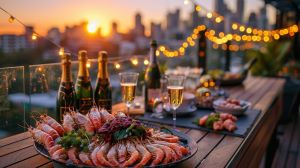

kontent

Lisää meistä
Lyhyt tarina Atraimesta
Atrain Seafood on perustettu vuonna 2023. Olemme erikoistuneet tarjoamaan tuoreita ja herkullisia meren antimia. Teemme yhteistyötä paikallisten kalastajien kanssa varmistaaksemme, että tarjoamme asiakkaille vain parasta meren ruokaa.